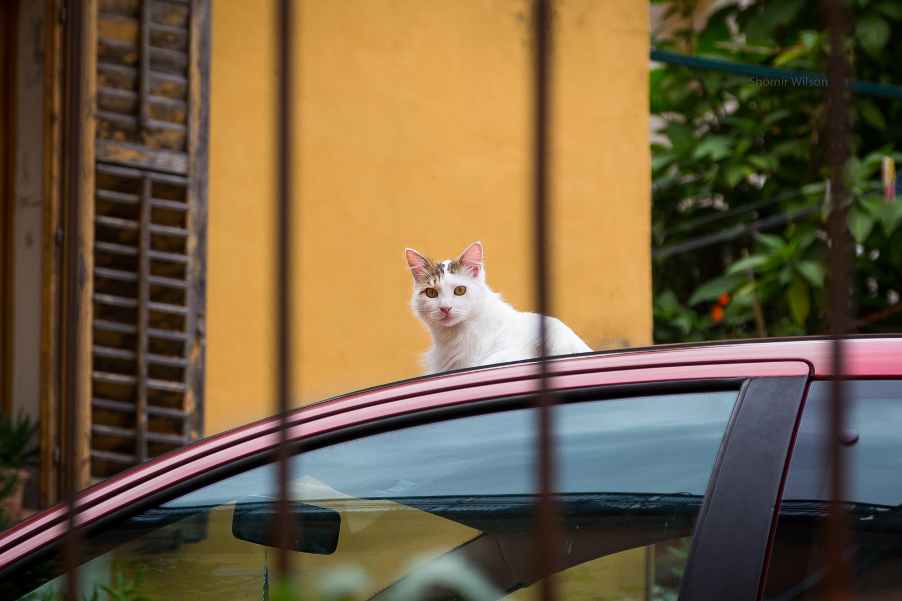

Thoughts on Photography
Work-life balance is important. Although this page is non-academic in nature, I keep it in my Advice for Students.
Read This First
I created this page to share my thoughts about photography with people who want to know more about my creative process. I've written in the style of advice, but it's far from a comprehensive guide. If you encounter unfamiliar terms, I recommend looking them up. My technical knowledge about photography came from a variety of sources across the internet.
I typically shoot with a DSLR, and some of the advice in this guide is written with the assumption that the reader uses either a DSLR or a mirrorless interchangeable-lens camera.
This guide and my Guide for Scholarly Writing thematically echo each other: both emphasize intentionality, joint maximization of technique and aesthetics, and the importance of taking breaks.
The Thoughts
- Learning Photography
- Your First Lens Should be a Zoom Lens
- Memorize How to Revert Your Camera to Full-Auto Mode
- Invest Time in Understanding the Fundamentals
- Recognize the Causes of Unsharp Images
- Specific Practices
- Use Photo Editing Software
- Calibrate the Computer Display That You Use for Editing
- If Your Camera is With You, Keep it Easily Accessible
- Let Ideas Motivate You, but Don't be Limited by Them
- Try to Understand How Exemplary Photographs Were Taken
- Turn Off the Flash Unless It's Truly Essential
- Take Breaks from Editing
- Photographic Style
- Realize the Decisions Your Camera Makes for You
- Be Aware of How Sharing Your Photography Affects Your Habits
- Go Beyond Postcard Pictures
- Recognize the Value of Intentionality
- Aim for Both Technical Excellence and Aesthetic Appeal
- Be Patient and Keep Learning

Learning Photography
Your First Lens Should be a Zoom Lens
A zoom lens gives you flexibility for composition and perspective. This flexibility is especially valuable when you are beginning photography: the activity needs to be engaging and accommodating. For a full-frame sensor, a range similar to 24mm-105mm is useful. For a crop sensor, a 18mm-55mm lens is common.
Some people are strongly in favor of using fixed focal length lenses because of their technical virtues, such as lack of distortion and better optical resolution. "Nifty fifty" lenses (i.e., cheap 50mm lenses) have an especially dedicated following. However, zoom lenses can take excellent pictures, and even many skilled photographers fail to notice their shortcomings. If editing your photos is part of your workflow (which it should be), flaws imparted by zoom lenses can be mitigated or eliminated by the right software.
I estimate that I take 80% of my pictures with zoom lenses.
Memorize How to Revert Your Camera to Full-Auto Mode
It's inevitable when using an interchangeable-lens camera that you bump knobs and accidentally press buttons. Accordingly, it's important to learn how to set all of your camera's controls back to "full-auto" (i.e., automatic exposure and automatic focus), both for the camera body and for the lens. Eventually you should learn what all the controls do, but being able to return to full-auto mode is an early priority.
On several occasions in public places I've been asked to take pictures of people using their own interchangable-lens cameras, only to discover the aperture or the shutter speed is fixed at an inappropriate level. When I try to explain, the owner rarely understands. I fix the problem for them. Their pictures suddenly improve after our encounter.
Invest Time in Understanding the Fundamentals
This means spending time learning about the basic variables that affect each shot: focal length, f-stop, ISO, and shutter speed. It also means learning about vignetting, distortion, depth of field, optical resolution, and MTF charts. Early in my experiences with a DSLR, I found it helpful to read online articles about these terms while keeping my camera handy for quick experiments.
Recognize the Causes of Unsharp Images
Unsharp images (or regions of images) can have at least four different causes:
- Motion blur: This can happen when the subject moves with respect to the lens. Often the solution is a faster shutter speed, so that the subject doesn't travel as far while the sensor is exposed. Sometimes the solution involves steadying the subject and/or the camera. Other times the solution is to turn off or adjust the lens' image stabilization.
- Out of focus: It's possible that the camera focused on a different object than you expected or the depth of field was too narrow. Note that bokeh, a sought-after softness in photography, also comes from part of the image being out of focus.
- Diffraction: Shooting at apertures tighter than approximately f/16 (e.g., f/22) will make the entire image less sharp, due to diffraction of light.
- Poor optical resolution: All lenses, but especially zoom lenses, produce images that are progressively less sharp in areas away from the center. Learning to read MTF charts is helpful to understand this.

Specific Practices
Use Photo Editing Software
It's extremely rare that I post unedited photos. At a minimum, I apply corrections for lens distortion and vingetting, and often I find other enhancements to make. Lightroom is a popular software choice, but there are others.
Calibrate the Computer Display That You Use for Editing
Display calibration guides exist online. Editing on a well-calibrated display maximizes the likelihood that your photographs will look the way you expect them to on a variety of other displays.
If Your Camera is With You, Keep it Easily Accessible
I prefer backpacks or slings with side access to the camera compartment, allowing me to retrieve my camera within seconds and without putting anything down. Easy access makes it possible to take pictures quickly, frequently, and impulsively. I also use a hand strap that allows me to comfortably hold my camera for long periods of time.

Let Ideas Motivate You, but Don't be Limited by Them
Many times I've mentally developed an idea for a photograph, planning it in my spare time over weeks or months, only to discover when I physically stage it that it isn't as appealing or as practical as I had thought. The next step, while I'm still at the place and with my equipment out, is the most important: I try something new and often it turns out better than my original plan. The value in bringing together your time, motivation, equipment, and subjects can be unpredictable. While you have all of them in one place, be flexible and try lots of different things.
Try to Understand How Exemplary Photographs Were Taken
When you see someone else's photography, especially in an art gallery or another public setting, look for clues that suggest how they took the picture. Is there vignetting or bokeh that could indicate a wide aperture? How high is the ISO? Do you see distortions that imply a wide-angle lens or a fisheye lens? If you know the place where the photo was taken, where was the photographer standing?
Turn Off the Flash Unless It's Truly Essential
I often see photographers using flashes for every shot or when they add no value, e.g., in daylight. Unnecessary flash usage drains batteries and annoys people around you. Often, the photographic subject is too far away. When you watch a televised event with a large crowd at night, such as a concert, note all the flash usage. Some of those camera users are taking pictures of people in the foreground, but many are taking pictures of the stage. If the subject is hundreds of feet away, the flash is futile.
Before using a flash for a subject, try taking a picture without it and examine the exposure level. Look also for motion blur or excessive ISO noise. You might be able to manually negotiate a better exposure with your camera settings, for example by trading off higher ISO for higher shutter speed, or you might need the flash.
I haven't owned a flash for my camera since 2014.
Take Breaks from Editing
Stepping away clears your short-term memory and brings you closer to the perspective of someone who hasn't seen the picture before. The fresh viewer's perspective is the one you should optimize for. You might find that you've over-edited a photograph or you haven't edited it enough.
I often take a break and reasses my editing just prior to deciding that I'm ready to share a photograph.
Photographic Style
Realize the Decisions Your Camera Makes for You
Every modern camera contains software that makes decisions on behalf of the user. Interchangeable-lens cameras (and a few high-end smartphones or unibody cameras) include an optional "RAW" mode that stores a nearly direct transcription of the sensor output, permitting the photographer to be as intentional as possible if they edit their photos afterward. (Even then, RAW output is subject to a nominal amount of digital processing. Noise removal is common.)
Smartphones typically let users make fewer choices. The artificial intelligence (AI) in smartphone camera software tends to be good at fixing typical photographic problems and satisfying common aesthetic wants, but overriding the software's decisions can be difficult or impossible. It's sometimes possible to take excellent photos with a smartphone, but the small optics and the lack of controls limit the photographer's intentionality, which means that luck plays a greater role. Image quality also remains a concern with smartphone cameras: often I see compression artifacts or AI artifacts adding their own textures to smartphone pictures.
"#nofilter" photography is not as immaculate as it sounds: there is no "pure" photographic equipment or method. The photographer's choice of camera is, in essence, a filter.
Be Aware of How Sharing Your Photography Affects Your Habits
Consider your motivations for taking pictures and sharing them online. If you share, recognize that you're at least mildly seeking the approval of others. To a moderate extent, that's fine: I wouldn't take nearly as many pictures if I couldn't share. However, you should maintain an awareness of the effects of public approval (or disapproval) on your goals. Alternatively, if you want to be an artistic maverick, recognize that it may be difficult to gain popular support.
Also, recognize that social media approval (e.g., on Facebook and Twitter) will not itself improve your photography. Relative popularity of your posts is a poor metric for which of your photos is "better", since the algorithms that determine who sees your photos are inscrutible and betterness can be a vague concept. I observe only a mild correlation between my critical judgement and social media feedback on my photos.
Internal motivation is more stable than any external source.
Go Beyond Postcard Pictures
When traveling, it's fine if some of your pictures are the same ones that everyone else takes. However, you gain more personal development as a photographer by taking unique shots as well. Look for the photographic opportunities that no one else seems to notice.
The poet William Stafford wrote that finding one's muse makes "every glance at the world around you [into] a sort of salvation". Similarly, he wrote that "the greatest ownership of all is to look around and understand". Inspiration comes more easily when you make the effort to seek out a wide variety of photographic subjects.

Recognize the Value of Intentionality
Artifacts of choice are pervasive in photographs: sharpness, contrast, saturation, grain, aspect ratio, vignetting, lighting, composition, and other properties of an image come from deliberate decisions or happenstance. Conscious decisions increase the likelihood of success for a shot, and they give the photographer the greatest flexibility during editing. Luck will seem to happen more often in photography if you are prepared to take full advantage of it.
This does not mean abandoning auto-focus or automatic shooting parameters, but it does mean fully recognizing what they do and understanding the alternatives. I estimate that three-quarters of the pictures I take are in modes that are essentially full-auto, but a disproportionate number of pictures I take with at least some manual settings become my favorites.

Aim for Both Technical Excellence and Aesthetic Appeal
Although extreme conditions sometimes require tradeoffs between technique and aesthetics, more often it's possible to get both at once via patience and skill. It's helpful to take several pictures of the same subject, each with different settings.
Be Patient and Keep Learning
Photographic skills and style require time to develop: there are no shortcuts around the accumulation of experience and self-reflection. Seven years passed between when I began to deliberately improve my skills and when I had my first public show, and I continue to improve.
Back to Top